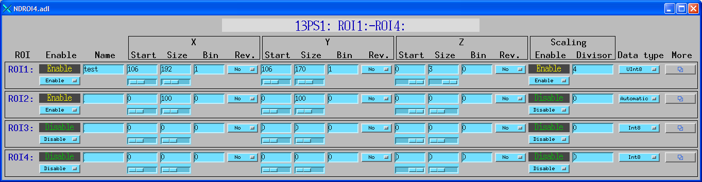

NDPluginROI¶
| author: | Mark Rivers, University of Chicago |
|---|
Contents
Overview¶
NDPluginROI selects a rectangular “Region-Of-Interest” (ROI) from the NDArray callback data. The ROI can be any size, from a single array element to the entire array. NDPluginROI does the following operations, in this order:
- Extracts the ROI as defined by its offset (starting array element) and size in each dimension.
- Optional binning in any dimension.
- Optional orientation reversal (mirroring) in any dimension.
- Optional scaling (dividing) by a scale factor.
- Optional conversion to a new data type.
- Optional collapsing (removing) of dimensions whose value is 1.
- Export the ROI as a new NDArray object. The NDPluginROI is both a recipient of callbacks and a source of NDArray callbacks, as a driver is. This means that other plugins like NDPluginStdArrays and NDPluginFile can be connected to an NDPluginROI plugin, in which case they will display or save the selected ROI rather than the full detector driver data.
If scaling is enabled then the array is promoted to a double when it is extracted and binned. The scaling is done on this double-precision array, and then the array is converted back to the desired output data type. This makes scaling relatively computationally intensive, but ensures that correct results are obtained, without integer truncation problems.
Note that while the NDPluginROI should be N-dimensional, the EPICS interface to the definition of the ROI is currently limited to a maximum of 3-D. This limitation may be removed in a future release.
NDPluginROI inherits from NDPluginDriver. The NDPluginROI class documentation describes this class in detail.
NDPluginROI.h defines the following parameters. It also implements all
of the standard plugin parameters from
NDPluginDriver. The EPICS database
NDROI.template provide access to these parameters, listed in the
following table. Note that to reduce the width of this table the
parameter index variable names have been split into 2 lines, but these
are just a single name, for example NDPluginROIName.
| Parameter Definitions in NDPluginROI.h and EPICS Record Definitions in NDROI.template | ||||||
|---|---|---|---|---|---|---|
| Parameter index variable | asyn interface | Access | Description | drvInfo string | EPICS record name | EPICS record type |
| NDPluginROI, Name | asynOctet | r/w | Name of this ROI | NAME | $(P)$(R)Name, $(P)$(R)Name_RBV | stringout, stringin |
| ROI definition | ||||||
| NDPluginROI, Dim0Enable | asynInt32 | r/w | Enable ROI calculations in the X dimension. If not enabled then the start, size, binning, and reverse operations are disabled in the X dimension, and the values from the input array are used. | DIM0_ENABLE | $(P)$(R)EnableX, $(P)$(R)EnableX_RBV | bo, bi |
| NDPluginROI, Dim1Enable | asynInt32 | r/w | Enable ROI calculations in the Y dimension. If not enabled then the start, size, binning, and reverse operations are disabled in the Y dimension, and the values from the input array are used. | DIM1_ENABLE | $(P)$(R)EnableY, $(P)$(R)EnableY_RBV | bo, bi |
| NDPluginROI, Dim2Enable | asynInt32 | r/w | Enable ROI calculations in the Z dimension. If not enabled then the start, size, binning, and reverse operations are disabled in the Z dimension, and the values from the input array are used. | DIM2_ENABLE | $(P)$(R)EnableZ, $(P)$(R)EnableZ_RBV | bo, bi |
| NDPluginROI, Dim0Bin | asynInt32 | r/w | Binning in the X dimension | DIM0_BIN | $(P)$(R)BinX, $(P)$(R)BinX_RBV | longout, longin |
| NDPluginROI, Dim1Bin | asynInt32 | r/w | Binning in the Y dimension | DIM1_BIN | $(P)$(R)BinY, $(P)$(R)BinY_RBV | longout, longin |
| NDPluginROI, Dim2Bin | asynInt32 | r/w | Binning in the Z dimension | DIM2_BIN | $(P)$(R)BinZ, $(P)$(R)BinZ_RBV | longout, longin |
| NDPluginROI, Dim0Min | asynInt32 | r/w | First pixel in the ROI in the X dimension. 0 is the first pixel in the array. | DIM0_MIN | $(P)$(R)MinX, $(P)$(R)MinX_RBV | longout, longin |
| NDPluginROI, Dim1Min | asynInt32 | r/w | First pixel in the ROI in the Y dimension., 0 is the first pixel in the array. | DIM1_MIN | $(P)$(R)MinY, $(P)$(R)MinY_RBV | longout, longin |
| NDPluginROI, Dim2Min | asynInt32 | r/w | First pixel in the ROI in the Z dimension., 0 is the first pixel in the array. | DIM2_MIN | $(P)$(R)MinZ, $(P)$(R)MinZ_RBV | longout, longin |
| NDPluginROI, Dim0Size | asynInt32 | r/w | Size of the ROI in the X dimension | DIM0_SIZE | $(P)$(R)SizeX, $(P)$(R)SizeX_RBV | longout, longin |
| NDPluginROI, Dim1Size | asynInt32 | r/w | Size of the ROI in the Y dimension | DIM1_SIZE | $(P)$(R)SizeY, $(P)$(R)SizeY_RBV | longout, longin |
| NDPluginROI, Dim2Size | asynInt32 | r/w | Size of the ROI in the Z dimension | DIM2_SIZE | $(P)$(R)SizeZ, $(P)$(R)SizeZ_RBV | longout, longin |
| NDPluginROI, Dim0AutoSize | asynInt32 | r/w | Automatically set SizeX to the input array size minus MinX | DIM0_AUTO_SIZE | $(P)$(R)AutoSizeX, $(P)$(R)AutoSizeX_RBV | bo, bi |
| NDPluginROI, Dim1AutoSize | asynInt32 | r/w | Automatically set SizeY to the input array size minus MinY | DIM1_AUTO_SIZE | $(P)$(R)AutoSizeY, $(P)$(R)AutoSizeY_RBV | bo, bi |
| NDPluginROI, Dim2AutoSize | asynInt32 | r/w | Automatically set SizeZ to the input array size minus MinZ | DIM2_AUTO_SIZE | $(P)$(R)AutoSizeZ, $(P)$(R)AutoSizeZ_RBV | bo, bi |
| NDPluginROI, Dim0MaxSize | asynInt32 | r/o | Maximum size of the ROI in the X dimension | DIM0_MAX_SIZE | $(P)$(R)MaxSizeX_RBV | longin |
| NDPluginROI, Dim1MaxSize | asynInt32 | r/o | Maximum size of the ROI in the Y dimension | DIM1_MAX_SIZE | $(P)$(R)MaxSizeY_RBV | longin |
| NDPluginROI, Dim2MaxSize | asynInt32 | r/o | Maximum size of the ROI in the Z dimension | DIM2_MAX_SIZE | $(P)$(R)MaxSizeZ_RBV | longin |
| NDPluginROI, Dim0Reverse | asynInt32 | r/w | Reverse ROI in the X dimension. (0=No, 1=Yes) | DIM0_REVERSE | $(P)$(R)ReverseX, $(P)$(R)ReverseX_RBV | longout, longin |
| NDPluginROI, Dim1Reverse | asynInt32 | r/w | Reverse ROI in the Y dimension. (0=No, 1=Yes) | DIM1_REVERSE | $(P)$(R)ReverseY, $(P)$(R)ReverseY_RBV | longout, longin |
| NDPluginROI, Dim2Reverse | asynInt32 | r/w | Reverse ROI in the Z dimension. (0=No, 1=Yes) | DIM2_REVERSE | $(P)$(R)ReverseZ, $(P)$(R)ReverseZ_RBV | longout, longin |
| NDPluginROI, DataType | asynInt32 | r/w | Data type of the ROI (NDDataType_t). This can be different from the data type of the NDArray callback data. | ROI_DATA_TYPE | $(P)$(R)DataType, $(P)$(R)DataType_RBV | mbbo, mbbi |
| NDArraySizeX | asynInt32 | r/o | Size of the ROI data in the X dimension | ARRAY_SIZE_X | $(P)$(R)ArraySizeX_RBV | longin |
| NDArraySizeY | asynInt32 | r/o | Size of the ROI data in the Y dimension | ARRAY_SIZE_Y | $(P)$(R)ArraySizeY_RBV | longin |
| NDArraySizeZ | asynInt32 | r/o | Size of the ROI data in the Z dimension | ARRAY_SIZE_Z | $(P)$(R)ArraySizeZ_RBV | longin |
| NDPluginROI, EnableScale | asynInt32 | r/w | Enable dividing by the Scale value. (0=Disable, 1=Enable). This is very useful when binning or when converting from a higher precision data type to a lower precision data type. For example when binning 2x2, then Scale=4 (dividing by 4) will prevent integer overflow. Similarly, when converting from 16-bit to 8-bit integers one might scale by 256, or perhaps a smaller number if the 16-bit data does not use the full 16-bit range. | ENABLE_SCALE | $(P)$(R)EnableScale, $(P)$(R)EnableScale_RBV | bo, bi |
| NDPluginROI, Scale | asynFloat64 | r/w | The scale value to divide by if EnableScale is enabled. | SCALE_VALUE | $(P)$(R)Scale, $(P)$(R)Scale_RBV | ao, ai |
| NDPluginROI, CollapseDims | asynInt32 | r/w | Collapse (remove) output array dimensions whose value is 1. Consider the case when the input array to the ROI plugin has dimensions [4, 256, 256] and the plugin is configured with MinX=1, SizeX=1, MinY=0, SizeY=256, MinZ=0, SizeZ=256. If CollapseDims=Disable then the output arrays will be of size [1, 256, 256]. If CollapseDims=Enable then the output array will be [256, 256]. This is convenient for some purposes. For example file plugins like JPEG or TIFF will not work with arrays of [1, 256, 256], nor will the ImageJ display plugin. They all require that the array have only 2 dimensions unless it is the special case of 3-D color arrays (RGB1, RGB2, RGB3) where one of the dimensons is 3. | COLLAPSE_DIMS | $(P)$(R)CollapseDims, $(P)$(R)CollapseDims_RBV | bo, bi |
A special case is made when the NDArray data has
colorMode=NDColorModeRGB1 or NDColorModeRGB2. In these cases the user
interface to the array dimensions is changed so that the Z PVs always
refer to the color dimension (as for NDColorModeRGB3), the X dimension
refers to the horizontal dimension, and the Y dimension refers to the
vertical dimension. This is very convenient, because it means that the
ROI does not need to redefined if, for example, the color mode is
changed from Mono to RGB1, which would be required if the X, Y and Z
dimensions were not automatically switched.
Configuration¶
The NDPluginROI plugin is created with the NDROIConfigure command,
either from C/C++ or from the EPICS IOC shell.
NDROIConfigure(const char *portName, int queueSize, int blockingCallbacks,
const char *NDArrayPort, int NDArrayAddr,
int maxBuffers, size_t maxMemory,
int priority, int stackSize, int maxThreads)
For details on the meaning of the parameters to this function refer to
the detailed documentation on the NDROIConfigure function in the
NDPluginROI.cpp
documentation
and in the documentation for the constructor for the NDPluginROI
class.
Screen shots¶
The following MEDM screen provides access to the parameters in
NDPluginDriver.h and NDPluginROI.h through records in
NDPluginBase.template and NDROI.template.
The following MEDM screen provides access to 4 ROIs at once.
